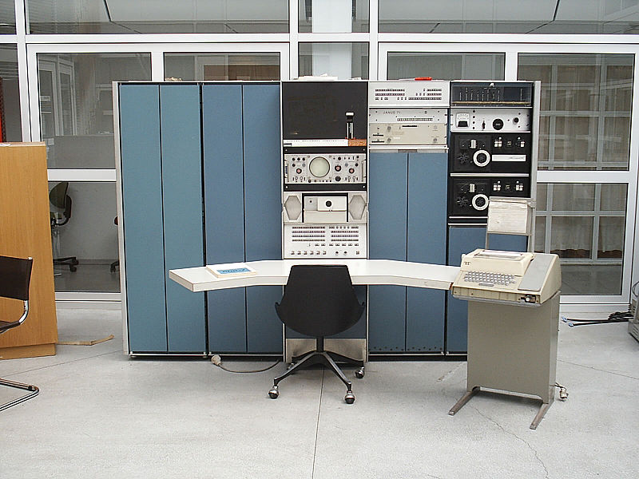

Kezdete
A kezdete nagyon szoros az Unix operációs rendszerrel, amit eredetileg a PDP-7 gépen írt meg Assembly nyelvben Ritchie és Ken Thompson, sok dolog ihletve a kollégáitól. Amikor kijött a PDP-11 gép akkor akartak egy nyelvet amivel könnyen működtetni tudják az Unix operációs rendszert így Thompson először elkezdett írni egy Fortran fordítót, de nem sokkal késöbb föl is adta. Ehelyett, ő létrehozott egy levágott verziót a BCPL rendszer programozási nyelvből, annyi változással hogy nem volt rendes leírása a nyelvnek és csökkentette a szavakat a szintakszisban. Létre hozva így egy nagyon hasonló nyelvet ami a B de szimplább, de a B nyelvel viszont voltak gondok mint a nyelv lassú volt és nem tudta a nyelv használni a PDP-11 gépnek a byte címzés új funkcióját
{kind=link}
1972-ben ritchie elkezdte javítani a B nyelvet, legjobban megjegyezhetően az adat tipusokat behozta a változóknak, így létre jött a C nyelv. A C fordító és még pár segédprogramok bekerültek az Unix 2. verziójába.
A 4. verzió Unixot, ami 1973 novemberén lett kiadva, az
egész
Unix
kernel
teljesen újra lett írva a C
nyelvben. Ebben az időben a nyelv szerzett pár erős
funkciókat mint a struct (strucktúra).
Preprocesszorok
kb.1973-ban lett bemutatva az
Alan Snyder sürgetésénél és még felismerve a fájl-befogadó
mechanizmus használhatóságát amit már láthattunk a BCPL és
PL/I nyelvekben. Eredeti veriója csak fájlt és szimpla
karaktersorozatot helyettesítőt
tudott befogadni: #include és
#define a paraméter nélküli makróknak. Késöbb
ezután ki lett egészítve legtöbbet Mike Lesk és utána
John Reiser által.
Az Unix volt az első operációs rendszer kernel ami nem assembly nyelvben lett írva. Elötte lévő esetek mint a Multics rendszer(ami PL/I nyelvben lett írva) és Master Control Program(ami ALGOL nyelben lett írva)
{kind=link}
{kind=link}
{kind=link}